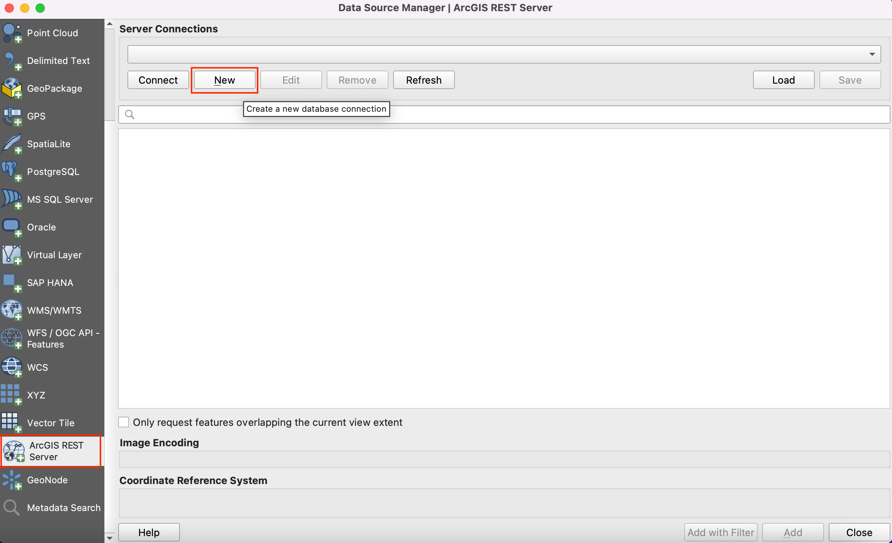
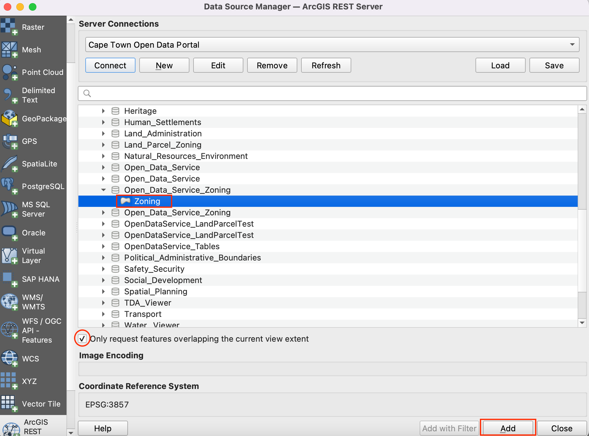
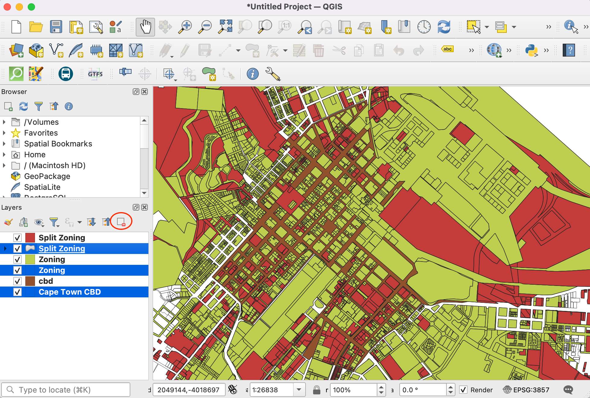
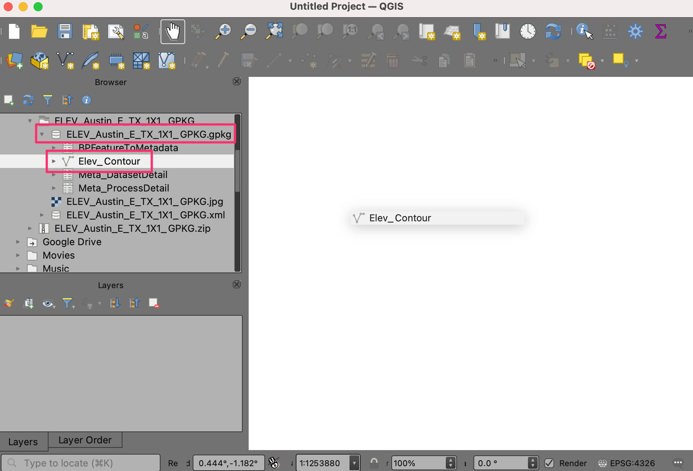
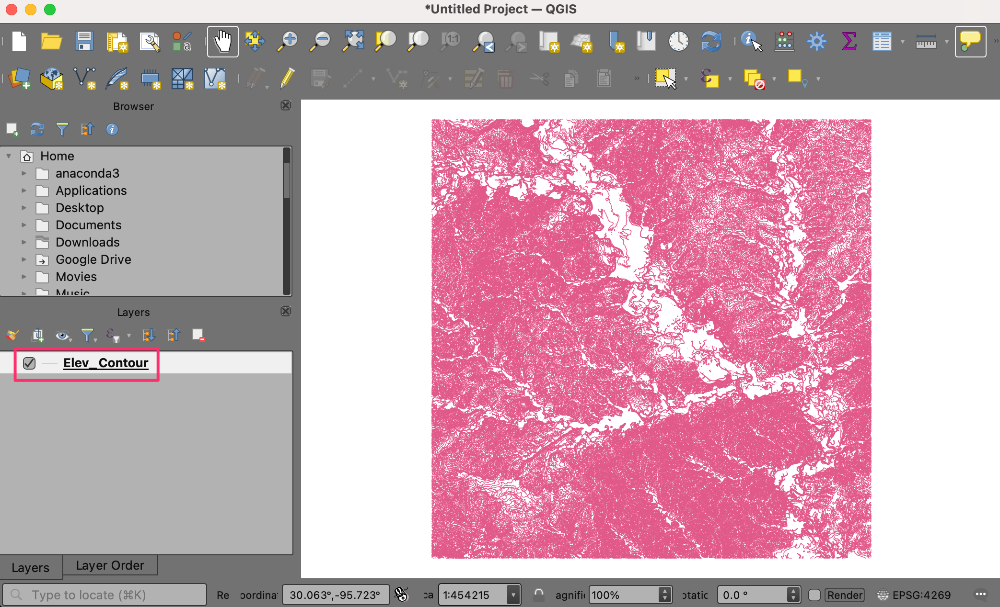
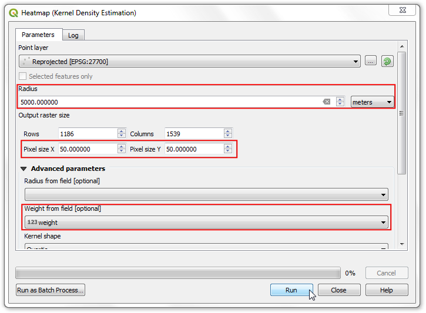
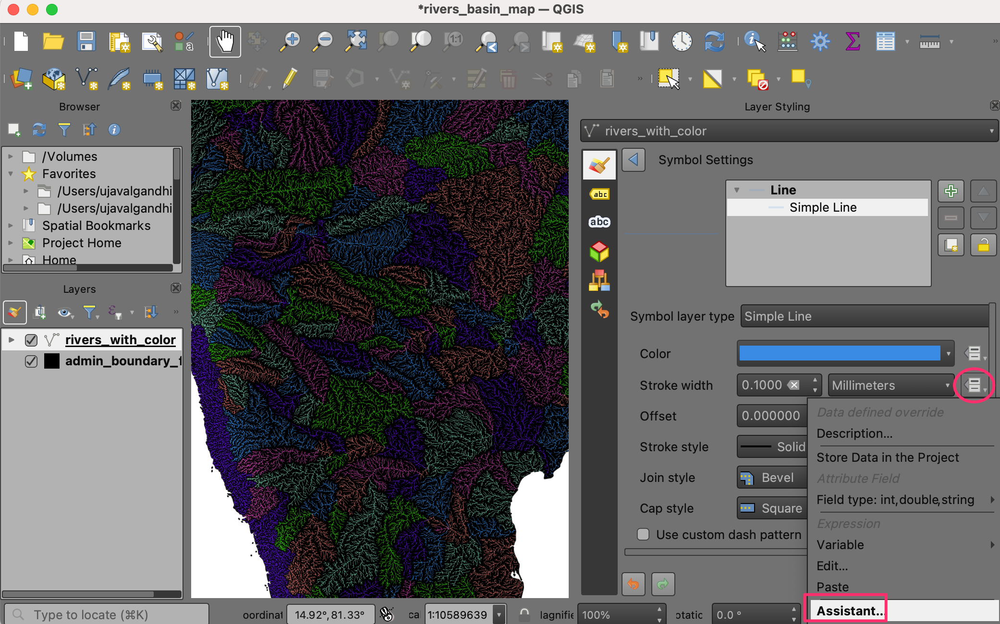
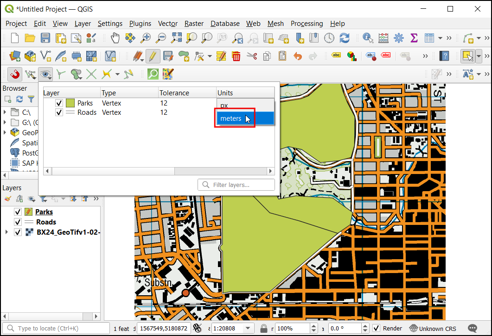

Erstellung einer Karte zur Landnutzung (QGIS3)¶
Zonierungen definieren und regulieren die Art und Weise der Landnutzung auf einzelnen Grundstücken, deren Grenzen, die Entwicklungsanforderungen und -richtlinien. In diesem Tutorial werden wir lernen, wie wir an Grundstücks-Datensätze kommen und sie entsprechend der Zonierungs-Attribute in einer Karte darstellen.
Überblick über die Aufgabe¶
Wir werden mit einem Datensatz von Grundstücken arbeiten, der Zonierungs-Informationen enthält und eine Karte erstellen, welche die Zonierungs-Muster der Innenstadt von Kapstadt darstellt.

Weitere Fähigkeiten, die wir erlernen:¶
Zugang zu und Download von Daten über die ArcGIS REST-Schnittstelle in QGIS
Ausschneiden von Objekten aus einem Layer, der einen Begrenzungs-Layer überlappt
Verschmelzen verschiedener Unter-Kategorien
Beschaffung der Daten¶
Die für dieses Tutorial geeigneten Daten sind im Cape Town Open Data Portal verfügbar. Aus diesem Portal werden wir die Daten mithilfe der REST-Schnittstelle von ArcGIS importieren und drei im Folgenden beschriebene Layer erzeugen.
Zonierungs-Layer: ein Polygon-Shapefile mit einem Zonierungs-Code und einer Beschreibung der Grundstücke mit je einer eigenen Zonierung - zugeschnitten auf die Innenstadt von Kapstadt
Teil-Zonierungs-Layer: ein Polgon-Shapefile mit einem Zonierungs-Code und einer Beschreibung der Grundstücke mit Mehrfach-Zonierung, bei dem jedes Polygon in einzelne zonierte Polygone aufgeteilt wird
Innenstadt von Kapstadt: ein Polygon, das die Grenzen des Innenstadtbereichs von Kapstadt markiert
Wir wollen den Datensatz für dieses Tutorial schrittweise erzeugen.
Wir gehen zum Daten-Portal und suchen nach den Innenstadt-Daten von Kapstadt (
Cape Town CBD data) in der Suchleiste und starten die Suche.
Wir benutzen den Button Vollständige Details anzeigen, um die Daten zu laden.
Ggf. müssen wir nach unten scrollen, um Datenquelle anzeigen zu finden; wir klicken darauf.

Im Verzeichnis der ArcGIS REST Services wählen wir Home und kopieren die URL dieser Seite; diese sollte etwa diese Form haben: https://citymaps.capetown.gov.za/agsext1/rest/services.

Nun öffnen wir QGIS und wählen .

Die Liste der möglichen Datenquellen befindet sich im linken Teil des Dialogs. Wir scrollen nach unten, bis angezeigt wird, wählen dies aus und klicken auf Neu, um eine neue Server-Verbindung zu erstellen.
Unter Verbindungsdetails vergeben wir als Name
Cape Town Open Data Portalund fügen die kopierte URL als Quelle unter URL ein.
Wir bestätigen mit OK und wählen dann Verbinden, um die auf dem Server verfügbaren Datenquellen anzuzeigen.

Nun suchen wir in der Datenbank nach den drei Layern, die wir für das Tutorial benötigen. Zuerst öffnen wir den Layer
Cape Town CBDin QGIS. Dazu erweitern wir die Ordner-Struktur. Der vollständige Pfad ist . Wir wählen den Layer und dann den Button Hinzufügen.
Wir schließen die , um den Layer in QGIS zu betrachten. Mit der rechten Maustaste rufen wir das Kontextmenü auf und wählen , um ihn im Arbeitsbereich zu zentrieren.
Wir werden nun den Layer
Zonierungmithilfe der Datenquellenverwaltung hinzufügen. Wir verbinden uns zumCape Town Open Data Portalund navigieren zum LayerZoning; der vollständige Pfad ist . Der Layer ist sehr groß, so dass wir die Option Nur sich mit aktueller Ansicht überschneidende Objekte abfragen wählen sollten. Ohne diese Option dauert das Laden sehr lange. Wir klicken Hinzufügen, um den Layer in QGIS zu öffnen.In gleicher Weise fügen wir den Teil-Zonierungs-Layer hinzu. Der vollständige Pfad ist Theme_Based –> Land_Parcel_Zoning –> Split Zoning.

Nun sind alle drei Layer in QGIS geöffnet. Wir wollen die Layer
ZoningundSplit Zoningmit dem Begrenzungs-LayerCape Town CBDverschneiden. Zunächst sollten wir alle drei Layer lokal als Shapefiles speichern. Nach einem Rechtsklick auf den LayerCape Town CBDund der Auswahl Export wählen wir Objekte speicher als.
Wir stellen als Format ESRI Shapefile ein und navigieren zu einem lokalen Ordner, in dem wir die Shapefiles abspeichern werden. Als Namen vergeben wir
cbdund klicken OK. Genauso verfahren wir mit den übrigen Layern und speichern sie alsZoningundSplit Zoningim selben Ordner.
Die vom Server geladenen Layer können nun entfernt werden. Dazu wählen wir alle drei Layer aus und wählen per Rechtskklick aus dem Kontextmenü Layer löschen …. Wir wollen nun die Objekte aus den Layern
ZoningundSplit Zoningausschneiden, die sich mit dem Layercbdüberschneiden.Wir wählen aus dem Menü.

In den Verarbeitungswerkzeugen suchen wir nach Verschneidung und öffnen das Werkzeug per Doppelklick.

Wir wählen
Zoningals Eingabelayer und für Layer überlagerncbd. Bei den übrigen Optionen belassen wir die voreingestellten Werte und fahren damit fort, das Ergebnis als Datei abzuspeichern.
Im Eingabefeld Verschneidung tragen wir
zoning_cbdals Namen für den temporären Layer ein und klicken den Button Starte.
Abhängig von den Einstellungen zur Verarbeitung werden unterschiedliche Fehler oder Warnungen im Protokoll-Bereich angezeigt. Der Eingabelayer weist einige ungültige Geometrien auf und wird daher bei der Verschneidung nicht verarbeitet. Wir werden diese Geometrien in den Layern
ZoningundSplit Zoningzunächst reparieren, bevor wird die Verschneidungen ausführen können.
Eine etwaig erstellte Ausgabe kann sowohl aus QGIS als auch aus dem Dateisystem wieder entfernt werden. Wir suchen in den Verarbeitungswerkzeugen nach und öffnen das Werkzeug per Doppelklick.

Wir wählen
Zoningals Eingabelayer. Alle anderen Optionen belassen wir bei den Voreinstellungen und speichern den Ausgabe-Layer alszoning_fixed.shpim Dateisystem, indem wir den Button … rechts neben Geometrien reparieren klicken und In Datei speichern… wählen. Wir klicken den Button Starte. Die Verarbeitung wiederholen wir für den LayerSplit Zoningund speichern die Ausgabe mit den reparierten Geometrien untersplit_zoning_fixed.shp.
Die Layer
ZoningundSplit Zoningkönnen entfernt werden. Nun können wir die Layerzoning_fixedundsplit_zoning_fixedmit dem Layercbdverschneiden. Wir wählen erneut das Werkzeug aus den Verarbeitungswerkzeugen und starten es per Doppelklick.
Wir wählen zoning_fixed als Eingabelayer und cbd unter Layer überlagern, um die Verschneidung wie oben beschrieben auszuführen. Die Ausgabe speichern wir als zoning_cbd und wiederholen die Prozedur für den Layer split_zoning_fixed; diese Ausgabe speichern wir als split_zoning_cbd.

Der Einfachheit halber können wir eine Kopie aller drei vorverarbeiteten Layer unter folgenden Links herunterladen:
Arbeitsablauf¶
Die folgenden Schritte sind nur erforderlich, wenn mit einem neuen Projekt gestartet wird. Dazu starten wir QGIS und klicken , um mit den für das Tutorial erforderlichen Layern arbeiten zu können.

Wir wechseln in den Vektor-Bereich und verwenden den Navigations-Button, um den Ordner zu öffnen, in dem die Shapefiles abgelegt wurden.

Wir wählen die Dateien
cbd.shp,zoning_cbd.shpundsplit_zoning_cbd.shpund klicken Öffnen.

Alle ausgewählten Dateien werden in der Textbox neben dem Bezeichner Vektordatensätze angezeigt. Wir klicken Hinzufügen und danach Schließen.

Wir sollten hin und wieder unsere Arbeit speichern. Dazu wählen wir .

Wir speichern das Projekt in einem Arbeitsverzeichnis als
landuse_map.qgz. Die Projektdatei in QGIS enthält Referenzen auf die Daten-Layer und speichert außerdem Styles, Karten-Vorlagen usw.

Wir wählen erst den Layer
zoning_cbdund dann Attributtabelle öffnen aus dem Menü . Hier ist wichtig, dass das AttributINT_ZONE_Cdie Zonierungscodes enthält und das AttributINT_ZONE_Ddie Beschreibung der Zonierung. die Attributtabelle können wir wieder schließen.

Wir wollen nun den Stil der Layer unter Nutzung dieser Attribute anpassen, so dass Grundstücke mit demselben Zonierungscode in derselben Farbe dargestellt werden. Dazu klicken wir auf den Button Layergestaltungsfenster öffnen im Layer-Panel und im jetzt geöffneten Fenster den Dropdown-Button bei Einzelsymbol.

Wir wählen Kategorisiert aus. Als Wert wählen wir
INT_ZONE_C, anschließend klicken wir Klassifizieren.
Eine Reihe von Symbolen wird angezeigt. Jedem einzelnen Code wird eine eigene Farbe zugeordnet.

Zu beachten ist, dass jede Kategorie der Zonierung Unterkategorien enthält. Die Kategorie
General Business (GB)hat die Unterkategorien `` GB1``,GB2usw. Für die Zielkarte können wir alle Unterkategorien zu einer übergeordneten Kategorie zusammenfassen. Dazu wählen wir alle Unterkategorien mit gedrückter Shift-Taste aus und wählen per Rechtsklick im Kontextmenü Kategorien verschmelzen.
Dies wiederholen wir für die Kategorien
MUundTR. Nach dem Zusammenfassen können wir die Beschriftung in der Legende ändern, um eine bessere Beschreibung anzuzeigen. Wir klicken doppelt auf einen Wert in der Spalte Legende, um die Kategorie unzubenennen.
Enter descriptions of each zoning category based on the values given in the
INR_ZONE_Dcolumn. As you enter those description, you will see the legend of the layer in the Layers panel also updates.
Now we can update the colors and symbology of each category. Click on the Symbol for a category.

Change the Fill color and Stroke color of the symbol to a color of your choice.

Repeat the process for each category. The last category is all other values. This category contains all parcels which have NULL values. This is because those parcels have multiple zoning categories attached to them and are represented in the split_zoning_cbd.shp layer. We do not need them in this layer. Select it and click the - icon to remove that category.

Next, select the
cbdlayer. Change the symbol to Simple Line and increase the Stroke width.
The
split_zoning_cbd.shplayer contains all parcels that were missing zoning codes in the zoning_cbd layer. The attribute table and values for the zones in thesplit_zoning_cbdare the same as thezoning_cbdlayer. Instead of configuring the symbology for this layer manually, we can copy/paste the styles. Select the zoning_cbd layer, right-click and select .
Now select the newly added
split_zoning_cbdlayer, right-click and select .
You will see the same symbology being applied to the polygons in the
split_zoning_cbdlayer. The styling and legend are complete now.
We have our layers styled and legend labels created. Now let’s create a map using these styled layers along with map elements like, scale bar, north arrow, labels etc. QGIS comes with a Print Layout that allows composing maps. Go to . When prompted for a name, you can leave it blank and click OK.

In the Print Layout window, you will see a canvas. Right-click and select Page Properties.
Set the Orientation to
Portrait. Next, go to .
Hold the left mouse button and draw a rectangle on the canvas. This is the map frame which will contain the map from the main QGIS window. In the Item Properties tab, use the Interactively Edit Map Extent icon to pan/zoom the content of the map frame.

Scroll down in the Item Properties tab and check the Frame option. Expand it and select a Color for the frame border. You can also increase the Thickness.

The map frame is now ready. Let’s add other elements. Go to .

Drag a rectangle where you want to place the legend. Once added, scroll down in the Item Properties tab and un-check the Auto update button so we can manually edit the legend items.

We have 2 layers with identical legends, so we can remove one of them. Select the
split_zoning_cbdlayer and click the Remove selected item(s) from legend icon. Similarly removecbdlayer from the legend.Right-click the
zoning_cbdlayer and check the Hidden option.
Scroll down and expand the Columns section. Check the Split layers option and increase the Count to 2.
Scroll down further to the Spacing section. Adjust the spacing between different elements till the legend is clearly legible.

You can change style and size of the fonts in legend from Fonts and Text Formatting properties. When done, go to . Drag a rectangle where you want to place the element on the map.

Pick a symbol of your choice. Scroll down and expand the SVG Parameters. Change the Fill color and Stroke color as per your choice.

Now we will add a Scale Bar. Go to . Drag a rectangle where you want to place the element on the map. Adjust the Style and Segments parameters for the scale bar.

Our map needs a title and other information labels. Go to .

Enter a map title in the Main Properties section. Click the Font button under Appearance section to adjust the font size and style.

Add other labels indicating the data source and your name. Lastly we will finish our map by adding a frame around the label block. Go to .

Draw a rectangle. Click the symbol for Style and set the Fill Color to transparent and Stroke color to match other frames.
Once you are satisfied with your composition, you can export the result. Go to . Save the PDF in your data folder as
capetown_zoning_map.pdf.
If you want to give feedback or share your experience with this tutorial, please comment below. (requires GitHub account)